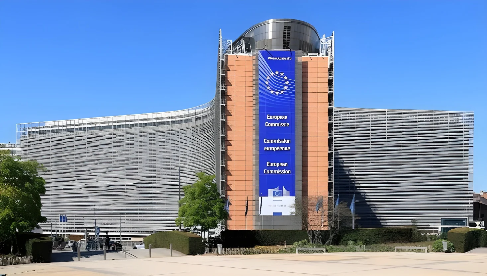

Le 1er octobre 2026, le ministre néerlandais de la Justice, David van Weel, a annoncé que la Commission européenne avait suspendu avec effet immédiat 18 millions d'euros d'appui budgétaire prévus cette année pour la Sierra Leone, faute de coopération de Freetown à l'extradition du narcotrafiquant néerlandais Jos Leijdekkers, dit « Bolle Jos ». Mais la Commission, comme le gouvernement sierra-léonais, conteste ce lien : pour eux, il s'agit d'un retard technique sur un avenant à l'accord de financement. Entre pression politique et contrat juridiquement contraignant, l'affaire révèle les limites de l'aide comme levier contre les routes de la cocaïne.
Le 1er octobre 2026, David van Weel a affirmé que la Commission européenne avait « immédiatement » suspendu ses versements à la Sierra Leone. Selon les médias néerlandais, qui citent le ministre, 18 millions d'euros d'appui budgétaire prévus pour 2026 sont gelés, et les Pays-Bas espèrent que l'enveloppe de l'an prochain (une vingtaine de millions d'euros, les sources donnent 20,5 ou 22,5 millions) le soit aussi. Ces fonds sont destinés à des programmes d'alimentation, d'éducation et d'infrastructures.
La Haye a mené la pression : le ministre avait demandé en juin à Bruxelles de couper l'aide, et le Parlement européen a adopté le 17 septembre une résolution réclamant une coopération judiciaire renforcée avec les pays tiers d'Afrique de l'Ouest, afin que les trafiquants condamnés n'échappent pas à leur peine, en citant ce cas. Les Pays-Bas poussent aussi des mesures plus larges, comme des interdictions d'entrée et des gels d'avoirs visant les grands criminels installés hors d'Europe.
Originaire de Breda, Jos Leijdekkers, surnommé « Bolle Jos », figure sur les listes de personnes recherchées des Pays-Bas et d'Europol depuis 2022. En juin 2024, le tribunal de Rotterdam l'a condamné par défaut à 24 ans de prison pour l'importation de près de 7 000 kg de cocaïne en six cargaisons et pour avoir commandité un meurtre. Il a aussi été condamné en Belgique : selon les médias, ses peines cumulées dépassent 80 ans, voire 100 ans selon les sources.
La police néerlandaise s'est dite en janvier 2025 convaincue qu'il vivait en Sierra Leone. Plusieurs médias néerlandais et belges lui prêtent des liens avec l'entourage du président Julius Maada Bio, dont une relation avec l'une de ses filles : ces éléments, rapportés par la presse, ne sont pas confirmés officiellement. Les condamnations évoquées sont établies ; sa localisation et ses protections supposées restent des allégations.
Van Weel annonce la suspension de 18 M€ ; le commissaire Magnus Brunner parle de raisons techniques, des sources de la Commission jugeant trompeuse la présentation néerlandaise.
Le Parlement européen adopte une résolution sur la coopération judiciaire avec les pays tiers, citant le cas Leijdekkers.
Le ministre en chef sierra-léonais, David Moinina Sengeh, répond à la pression néerlandaise : « Si vous savez où il est, montrez les photos ».
Décision de l'UE de différer l'appui budgétaire 2026, présentée par Freetown comme purement procédurale.
Van Weel demande à Bruxelles de couper l'aide à la Sierra Leone.
La police néerlandaise se dit certaine que Leijdekkers vit en Sierra Leone ; Freetown se déclare d'abord prête à enquêter.
Condamnation par défaut à 24 ans de prison à Rotterdam.
Leijdekkers entre sur les listes de personnes recherchées des Pays-Bas et d'Europol.
Pour les Pays-Bas, la suspension est une sanction politique. « Il est amer que de l'argent européen aille à un pays qui ne veut pas coopérer à l'extradition de quelqu'un comme Bolle Jos », a déclaré Van Weel. La Commission, elle, est irritée de cette lecture. Le commissaire Magnus Brunner a assuré en conférence de presse que la décision avait été prise pour des raisons techniques, et qu'il n'est pas juridiquement permis de couper une aide pour des motifs politiques quand les accords d'appui budgétaire sont contractuellement contraignants. Elle reconnaît toutefois qu'il faut agir contre les pays qui abritent de grands narcotrafiquants.
Freetown rejoint la lecture de la Commission. Le ministre de l'Information, Chernor Bah, explique que le retard de l'appui 2026 tient à des difficultés de procédure sur un accord de financement modifié, avec des versements désormais proposés pour 2027 et 2028. Le gouvernement du président Julius Maada Bio affirme par ailleurs que ses services ne parviennent pas à localiser Leijdekkers ; son ministre en chef a lancé : « Si vous savez où il est, montrez les photos ».
« Les articles présentant la décision de l'UE de juillet comme une nouvelle mesure punitive liée à une personne ou à une affaire particulière ne reflètent donc pas les raisons communiquées officiellement au gouvernement. »
— Chernor Bah, ministre sierra-léonais de l'Information, octobre 2026 (traduction)| Acteur | Position |
|---|---|
| Pays-Bas | Lient la suspension à l'extradition, veulent geler aussi 2027 |
| Commission | Invoque des raisons techniques ; refuse une sanction politique |
| Sierra Leone | Parle d'un retard procédural ; dit ne pas pouvoir localiser Leijdekkers |
| Parlement européen | Réclame plus de coopération judiciaire avec l'Afrique de l'Ouest |
| Cordaid (ONG) | Craint que la population paie, pas l'élite |
Les ONG alertent sur l'effet de cette suspension. Cordaid, citée par Omroep Brabant, estime qu'on ne touche pas ainsi l'élite politique mais « les gens du pays », dans un pays de faible espérance de vie, au système de santé fragile et à la sécurité alimentaire précaire. L'organisation propose de passer plutôt par des associations locales de confiance ou des agences de l'ONU.
Le dossier s'inscrit dans l'enveloppe de 352 millions d'euros de subventions de l'UE pour la Sierra Leone en 2021-2027, centrée sur l'économie verte, le développement humain et la gouvernance. Il rappelle aussi la fragilité de l'Afrique de l'Ouest, où l'État peine à tenir son territoire, comme au Mali, et qui sert de plateforme de transit à la cocaïne latino-américaine vers l'Europe.
Brandir le robinet budgétaire contre un État qui protège un fugitif est tentant : l'extradition est une affaire de souveraineté, où les outils judiciaires classiques (traités, mandats) butent sur le refus politique. Mais la conditionnalité a un coût. Quand le motif est contesté, la Commission perd en crédibilité juridique, et les premières victimes sont les bénéficiaires des programmes.
L'épisode oppose aussi deux logiques européennes : celle d'un État membre qui veut des résultats rapides contre le crime organisé, et celle d'une institution tenue par ses contrats. Restent des faits non établis : le lieu exact où se trouve Leijdekkers, ses protections éventuelles et l'ampleur réelle des montants gelés en 2027.